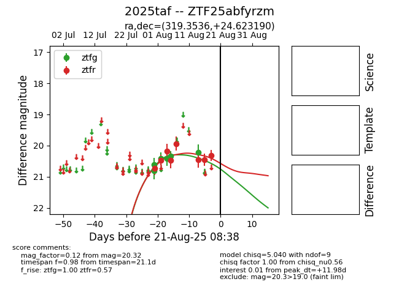

Target 2025taf at 2025-08-21 08:38, see:
FINK: fink-portal.org/ZTF25abfyrzm
Lasair: lasair-ztf.lsst.ac.uk/objects/ZTF25abfyrzm
ALeRCE: alerce.online/object/ZTF25abfyrzm
TNS: wis-tns.org/object/2025taf
YSE: ziggy.ucolick.org/yse/transient_detail/2025taf
alt names
ZTF25abfyrzm (ztf,alerce)
2025taf (tns,yse)
coordinates:
equatorial (ra, dec) = (319.3536,+24.62319)
galactic (l, b) = (73.1208,-16.92952)
photometry
last ztfg=20.22, ztfr=20.32
6 ztfg, 8 ztfr detections
